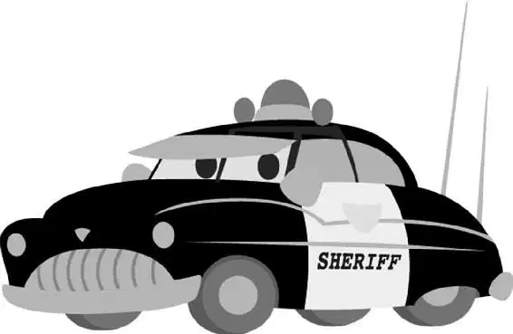

When Lightning opened his eyes the next morning, he could hardly make out the blurry shape in front of him.
“Oh, boy … ,” Lightning said groggily. “Where am I? What—?”
Lightning squinted. It took him a moment to figure out what he was looking at: a rusty old tow truck staring at him through a chain-link fence.
“Morning, Sleepin’ Beauty!” the tow truck sang.
“Aha! Boy, I was wonderin’ when you was gonna wake up!”
“Ahh!” Lightning cried, startled. “T-t-take whatever you want! Just don’t hurt me!” He gunned his engine, but he didn’t move. He looked down at his tire. “A parking boot?” he cried in horror at the metal clamp that pinned him in place. “Why do I have a parking boot on? What do you—What’s going on here, please?”
The tow truck burst into a gap-toothed grin. “You’re funny,” he said. “I like you already! My name’s Mater!”
Lightning was so surprised by the strange name that he stopped struggling against his parking boot. “Mater?”
“Yeah, like ‘tuh-mater,’” the tow truck explained, “but without the ‘tuh.’ What’s your name?”
“What?” Lightning asked. “Look, I need to get to California as fast as possible. Where am I?”
“Where are ya?” Mater asked. “Shoot. You’re in Radiator Springs, the cutest little town in Carburetor County.”
Lightning looked around. All he could see was a dreary row of boarded-up buildings. It didn’t look so cute to him. “Oh, great,” he said sarcastically. “Just great!”
“Well, if you think that’s great,” Mater said proudly, “you should see the rest of the town!”
Lightning was starting to realize that Mater wasn’t the fastest car on the racetrack, which gave him an idea. “You know,” Lightning said craftily, “I’d love to see the rest of the town, so if you could just open the gate, take this boot off, you and me— we go cruisin’, check out the local scene, you know?”
“Dadgum!” Mater cried. “Cool!” He started to open the gate when a shout stopped him in his tracks.
“Mater!” bellowed the Sheriff as he rolled up. “What did I tell you about talking to the accused?”
Mater looked sheepish. “To not to.”
“Well, quit your yappin’,” the Sheriff snarled, “and tow this delinquent road hazard to traffic court.”
